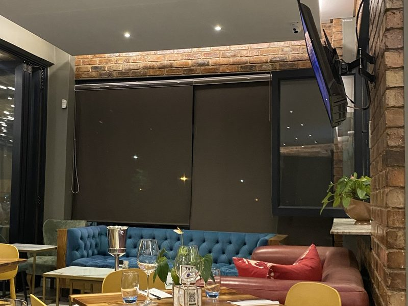

Orlando West · Soweto
Fine dining on the world's only Nobel Peace Prize street.
Elevated South African cuisine, a cellar of carefully chosen wines, and a view over Orlando — steps from the homes of Nelson Mandela and Archbishop Desmond Tutu.
Est. 2021
Founded by Naomi Lele Ratsheko, with a name that honours the birth year of both her parents.
Wine & Whisky Cellar
A temperature-controlled cellar and curated tastings, paired with dishes from our kitchen.
Views of Orlando
An upstairs balcony and cigar lounge overlooking the Orlando and FNB stadiums.
Our Story
Soweto's heritage, elevated.
Nestled along the most storied street in South Africa, 1947 on Vilakazi Street blends township warmth with refined hospitality — proof that fine dining and community spirit belong at the same table.
Read Our Story
From the Kitchen
A taste of the menu.
Buttermilk Chicken Thighs
Buttermilk-marinated, finished with a chilli-lime yoghurt dip.
Lamb Rump
Tzatziki, olive and feta ratatouille, baby potatoes.
Surf and Turf
Beef fillet, Argentine prawns, pommes purée, creamy garlic sauce.